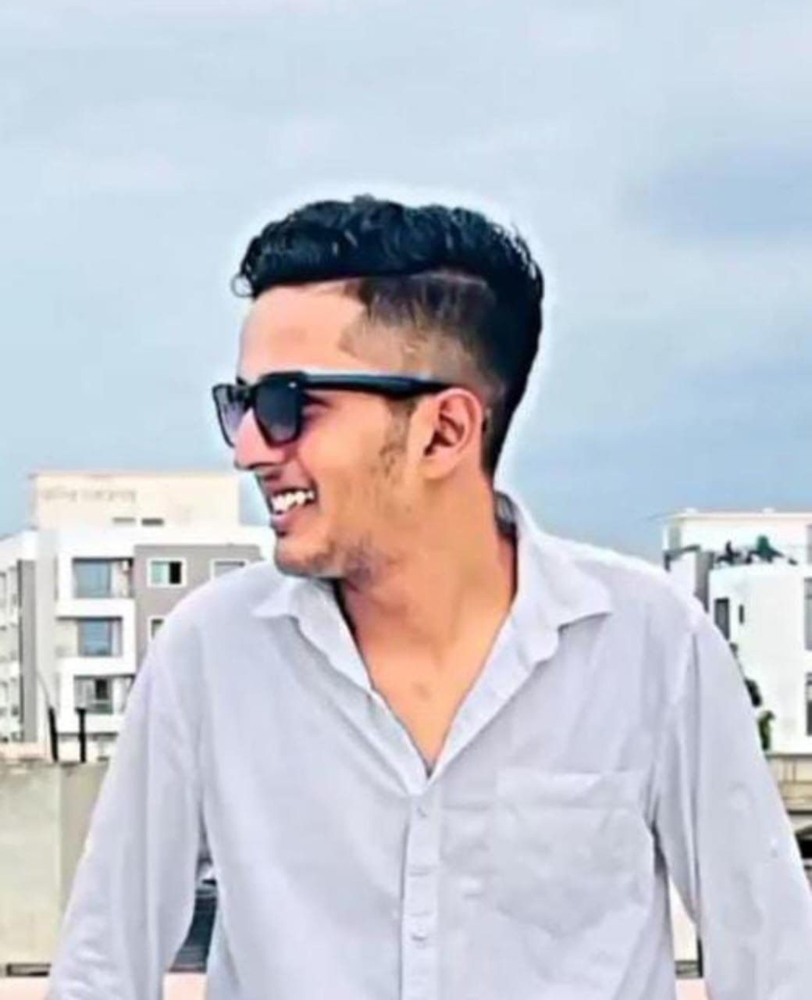

Mohammed Aadil
As a Front-End Developer, I specialize in crafting engaging user interfaces using HTML, CSS, JavaScript. With a keen eye for design and a solid foundation in front-end development, I excel at transforming complex ideas into intuitive and responsive web applications. My dedication towards work includes creating interactive features, optimizing performance, and ensuring cross-browser compatibility to deliver seamless user experiences. I thrive in collaborative environments where creativity and technical expertise converge to build innovative digital solutions. "
Top Skills
- JavaScript
- HTML
- CSS
Certifications
- JavaScript (Intermediate) Certificate
- CSS (Basic) Certificate
- Front End Development - HTML
- JavaScript (Basic) Certificate
Education
JECRC University
Bachelor of Technology - BTech, Computer Science (September 2021 - July 2025)
Kanakraj Sawantraj Lodha Public Sr. Sec. School, Falna (Raj)
12. (2021)
Get in Touch
+916378281711 (Mobile)
aadil.mohammed2004@gmail.com